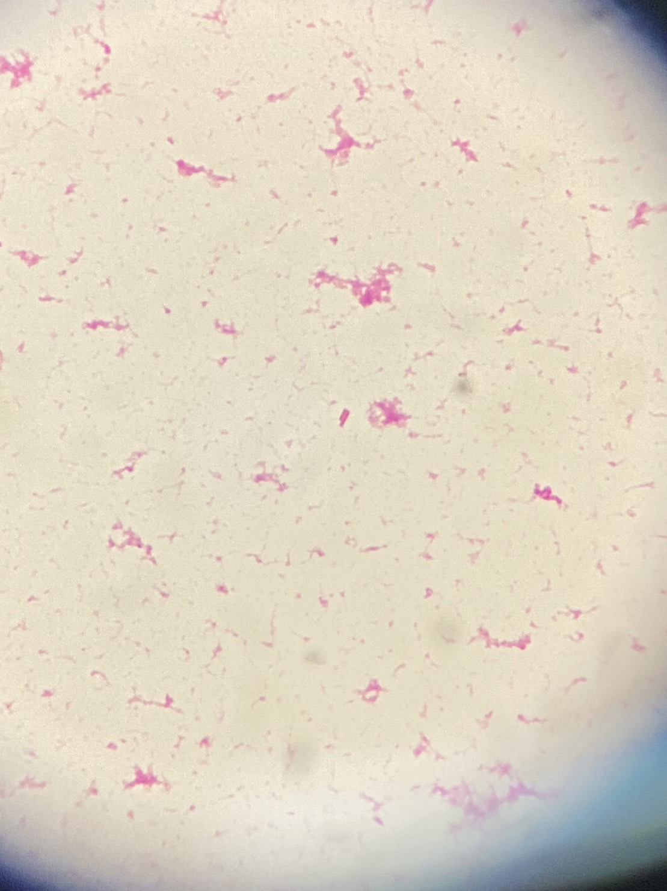

グラム染色 像 撮影：ICU関谷

分類・特徴
院内感染の主要原因菌で、特に免疫不全患者・人工呼吸器装着患者での日和見感染が問題となる非発酵グラム陰性桿菌。代謝的多様性と遺伝的可塑性が高く、本質的に多剤耐性で治療中にさらなる耐性を獲得しうる[1][2][3]。
主な感染症
抗菌薬選択
※ 灰色表示の抗菌薬は日本未発売のため、原則として保険診療では使用不可。
感受性株（MDR でない）[10]
- ピペラシリン・タゾバクタム ／ セフタジジム ／ セフェピム ／ アズトレオナム
- イミペネム ／ メロペネム
- 従来の β-ラクタム系と新規 β-ラクタム配合剤の両方に感受性がある場合は、従来薬を優先[10]。
DTR P. aeruginosa（尿路感染以外）[10][11][12]
- セフトロザン・タゾバクタム（第一選択）
- セフタジジム・アビバクタム（第一選択）
- イミペネム・シラスタチン・レレバクタム（第一選択）
- セフィデロコール（代替）
複雑性 UTI・腎盂腎炎[10]
- セフトロザン・タゾバクタム ／ セフタジジム・アビバクタム ／ イミペネム・シラスタチン・レレバクタム ／ セフィデロコール
- 代替：トブラマイシン ／ アミカシン（1日1回投与）
メタロβ-ラクタマーゼ産生株[11]
- セフィデロコール（第一選択）
- アズトレオナム・アビバクタム（代替）
- セフタジジム・アビバクタム ＋ アズトレオナム併用（代替）
- ポリミキシン ＋ メロペネム併用
経験的治療（緑膿菌リスクあり）[13]
- 抗緑膿菌活性 β-ラクタム（PIPC/TAZ ／ セフェピム ／ イミペネム ／ メロペネム）＋ シプロフロキサシン または レボフロキサシン 750mg
重要な治療原則
関連リンク
出典
- Reynolds D, Kollef M. The Epidemiology and Pathogenesis and Treatment of Pseudomonas Aeruginosa Infections: An Update. Drugs 2021;81(18):2117-2131.
- Letizia M, Diggle SP, Whiteley M. Pseudomonas Aeruginosa: Ecology, Evolution, Pathogenesis and Antimicrobial Susceptibility. Nat Rev Microbiol 2025;23(11):701-717.
- Alharbi MS, Moursi SA, Alshammari A, et al. Multidrug-Resistant Pseudomonas Aeruginosa: Pathogenesis, Resistance Mechanisms, and Novel Therapeutic Strategies. Virulence 2025;16(1):2580160.
- Lynch JP, Zhanel GG. Pseudomonas Aeruginosa Pneumonia: Evolution of Antimicrobial Resistance and Implications for Therapy. Semin Respir Crit Care Med 2022;43(2):191-218.
- Lynch JP, Zhanel GG, Clark NM. Emergence of Antimicrobial Resistance Among Pseudomonas Aeruginosa: Implications for Therapy. Semin Respir Crit Care Med 2017;38(3):326-345.
- Vasil ML. Pseudomonas Aeruginosa: Biology, Mechanisms of Virulence, Epidemiology. J Pediatr 1986;108(5 Pt 2):800-5.
- Qin S, Xiao W, Zhou C, et al. Pseudomonas Aeruginosa: Pathogenesis, Virulence Factors, Antibiotic Resistance, Interaction With Host, Technology Advances and Emerging Therapeutics. Signal Transduct Target Ther 2022;7(1):199.
- Sawant S, Shaikh S, Baldwin TC, Karakoula A, Rahman A. Pseudomonas Aeruginosa: Associated Pathogenesis, Epidemiology, Resistance Mechanisms, Host Response and Emerging Treatment Strategies. Arch Microbiol 2026;208(7):351.
- Neu HC. The Role of Pseudomonas Aeruginosa in Infections. J Antimicrob Chemother 1983;11 Suppl B:1-13.
- Tamma PD, Aitken SL, Bonomo RA, et al. IDSA 2023 Guidance on the Treatment of Antimicrobial Resistant Gram-Negative Infections. Clin Infect Dis 2023;ciad428.
- Horcajada JP, Gales A, Isler B, et al. How Do I Manage Difficult-to-Treat Pseudomonas Aeruginosa Infections? Clin Microbiol Infect 2025.
- Tamma PD, Heil EL, Justo JA, et al. IDSA 2024 Guidance on the Treatment of Antimicrobial-Resistant Gram-Negative Infections. Clin Infect Dis 2024;ciae403.
- Constance Benson, John Brooks, Shireesha Dhanireddy, et al. Guidelines for the Prevention and Treatment of Opportunistic Infections in Adults and Adolescents With HIV. IDSA / OARAC (2025).